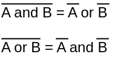

Het design van de 16-bit ALU wordt hier stap-per-stap toegelicht. Voor de logische operaties wordt alles gebouwd rond de AND-gate. Voor de aritmetische operaties wordt alles gebouwd rond de ripple-carry adder.
Dit is voor de hand liggend.
Door gebruik te maken van de wetten van De Morgan, kan een OR-gate gebouwd worden met de AND-gate.

Als beide inputs, A en B, geïnverteerd worden, geeft de logische AND-gate een geïnverteerde OR-gate.
Om de uitgang op één van de waardes aan de ingang te zetten, zijn er twee opties:
Z = X or 0x0000, of Z = X and 0xFFFF.
In beide gevallen gaat er een mogelijkheid moeten zijn om een vaste input te kiezen.
Aangezien er reeds een mogelijkheid is om de ingangen te inverteren, gaat deze aanpassing ook de mogelijkheid bieden om de uitgang op de geïnverteerde waarde van één van de waardes aan de ingang te zetten.
Dit is voor de hand liggend.
Om x-y te berekenen, zou het mooi zijn als de weergegeven architectuur zou passen. #spoiler: dat kan 😃 De belangrijkste regel die hiervoor gebuikt wordt is -y = y +1
Indien de uitgang nu geïnverteerd wordt, wilt dat opnieuw zeggen dat de waarde negatief en met 1 verminderd wordt.
Uiteraard kunnen x en y omgewisseld worden. Dit geeft volgende opties:
Als de waarde van het positieve getal in van de aftrekking op 0x0 gezet wordt, kan de negatieve waarde van het andere getal berekend worden.
Beide waardes op 0x0 zetten, zal er uiteraard voor zorgen dat de som 0x0 blijft.
Indien x verminderd wordt met 0x0, wordt er van de waarde van x eigenlijk 1 afgetrokken.
Deze vermindering met 1 doen op de waarde 0x0, geeft altijd -1.
Je kan zelf verifiëren dat -1 + (-1) altijd 1 geeft.
Tenslotte kan x + 0 = (-x-1)+(-1) = (-x-2), ook geïnverteerd worden wat resulteert in -x-2 = -(-x-2) -1 = x+2-1 = x+1.
Hoog tijd om de vruchten te plukken van het design werk. Alle 18 operaties die vermeld staan aan het begin van dit hoofdstuk, kunnen gemaakt worden met de hierboven beschreven methode. Het uiteindelijke design van de ALU is hieronder weergegeven.
De benodigheden zijn dus: